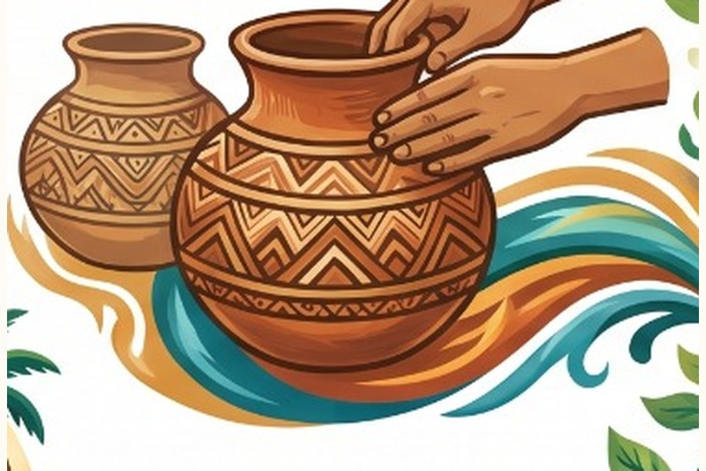
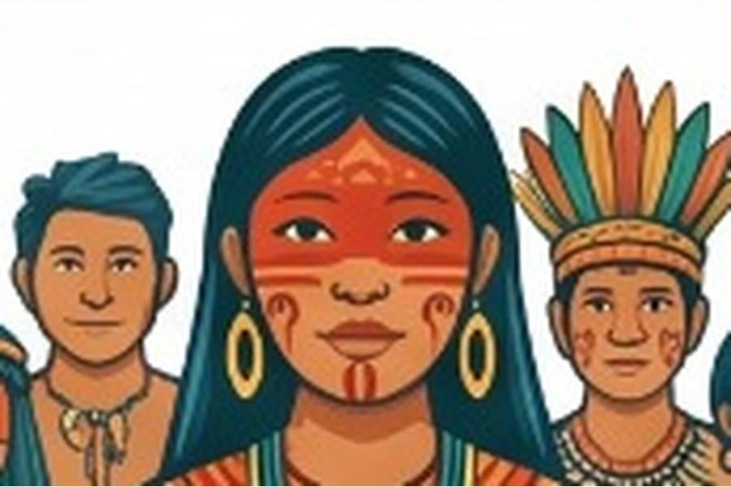
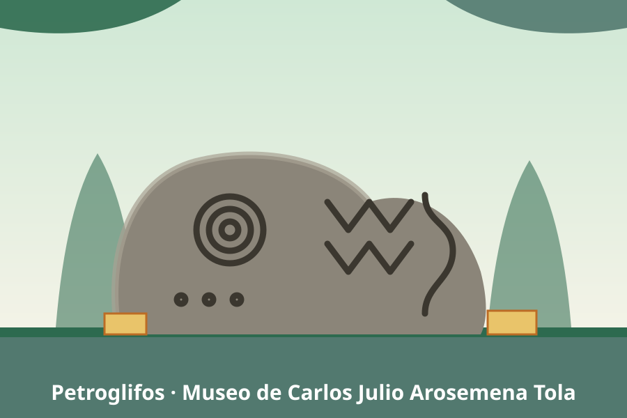

Arte y Patrimonio de Napo
La creatividad del pueblo Kichwa amazónico y de las demás nacionalidades de Napo se expresa en su artesanía, arquitectura, literatura oral y patrimonio cultural, reflejando su profunda relación con la selva.

Alfarería, cestería y tejidos
La alfarería tradicional de Tena y Archidona fue declarada Patrimonio Cultural Inmaterial del Ecuador en 2022. Las mujeres kichwas elaboran mucahuas, tinajas y ollas de cerámica utilitaria y ritual, usadas en ceremonias como la Fiesta de la Chonta. A esto se suma la cestería elaborada con fibras del bosque, los tejidos en chambira y algodón, y la talla en madera de balsa y chonta, técnicas que reflejan la cosmovisión kichwa y su estrecha relación con la naturaleza.

De la vivienda ancestral a la ciudad amazónica
La arquitectura tradicional utiliza materiales del bosque (madera, hoja de palma y bijao) y privilegia la ventilación natural frente al clima tropical húmedo. Durante la Colonia, ciudades como Baeza y Archidona se organizaron en un trazado en damero con plaza central, siguiendo el modelo español. Hoy, Tena y Archidona combinan edificaciones modernas con un entorno amazónico que aún conserva viviendas de influencia tradicional.

La palabra que se transmite de generación en generación
La literatura kichwa de Napo es fundamentalmente oral: mitos, leyendas, cantos y poesía que explican el origen del mundo, la selva y sus espíritus protectores. Una expresión destacada es el Festival de Mujeres Adultas Mayores Kichwas Versiadoras, realizado en la parroquia de Misahuallí, donde se preservan y comparten los versos y cantos tradicionales transmitidos por las abuelas kichwas.

Juegos, danza, medicina y arqueología
El patrimonio cultural de Napo incluye juegos tradicionales y danzas ceremoniales, así como una rica medicina ancestral basada en el uso de plantas del bosque. En el cantón Carlos Julio Arosemena Tola funciona un museo arqueológico comunitario que resguarda una colección de piedritas grabadas (petroglifos) y cuenta con un jardín botánico, un referente para la investigación y la valoración del pasado prehispánico de la región.